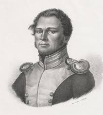

Piotr Jacek Wysocki (ur. 10 września 1797 w Winiarach, zm. 6 stycznia 1875 w Warce [2]) – pułkownik [3] Wojska Polskiego, inicjator powstania listopadowego, działacz niepodległościowy, przywódca sprzysiężenia podchorążych, które doprowadziło do wybuchu powstania listopadowego (29 listopada 1830), zesłaniec. 3 marca 1831 roku został odznaczony Krzyżem
Złotym Orderu Virtuti Militari (numer krzyża 1) [4]

Młodość
Pochodził z rodziny szlacheckiej pieczętującej się herbem Odrowąż, wywodzącej się z Chociwia Wielkiego. Był jednym
z czterech synów Jana i Katarzyny z Brzumińskich. W młodości kształcił się w Warszawie; najpierw w szkole pijarskiej, a następnie, od roku 1824[5][6][7], jako kadet w Szkole Podchorążych Piechoty (do maja 1827[8]). Służba w 4 pułku grenadierów, stosunki panujące w polskiej armii, zwierzchność cara i ciężkie warunki służby wpłynęły na
poglądy Wysockiego, zbliżając go do kół patriotycznych.
Gdy w roku 1827[8] został instruktorem musztry w Szkole Podchorążych, energicznie zabrał się do stworzenia i działań wewnątrz tajnego związku niepodległościowego, zwanego potocznie Sprzysiężeniem Wysockiego.
powstanie listopadowego
Wieczorem 29 listopada 1830 roku poderwał do powstania podchorążych, wchodząc do Szkoły Podchorążych, przerywając zajęcia z taktyki – wygłaszając mowę: „Polacy! Wybiła godzina zemsty. Dziś umrzeć lub zwyciężyć potrzeba! Idźmy, a piersi wasze niech będą Termopilami dla wrogów[9][10].
Po wybuchu powstania został mianowany kapitanem, w powstaniu dosłużył się stopnia pułkownika[b][3], był adiutantem naczelnego wodza Michała Radziwiłła. Uczestniczył w bitwach: pod Wawrem, pod Grochowem, pod Dobrem i pod Okuniewem. Brał także udział w wyprawie generała Józefa Dwernickiego na Wołyń, przeszedł granicę austriacką, ale
uniknął internowania i przedostał się z powrotem do kraju[11]. We wrześniu 1831 roku, będąc dowódcą 10 pułku piechoty liniowej, został ranny podczas walk w obronie reduty nr 56 na warszawskiej Woli i
6 września 1831 roku dostał się do niewoli rosyjskiej.